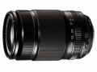

器材库 > APS画幅镜头 > XF 55-200/3.5-4.8 R LM OIS

详细规格
镜头类型
远摄变焦镜头
发布日期
2013-04-17
厂家推荐价格
70,000.00 （日元）
焦距
55mm-200mm
等效35mm画幅焦距
84mm-305mm
最大光圈
f/3.5-f/4.8
最小光圈
f/22
视角（对角）
29°- 8.1°
镜头结构
14片/10组
非球面镜片
1片
低/超低色散镜片
1/1片
光圈叶片
7片
最近对焦距离
110cm
最大放大倍率
0.18
滤镜口径
62mm
镜头卡口
Fujifilm X
防抖
是
颜色
黑色
尺寸
75×118mm
我用美能达2015-03-19 14:434.67 分
操作性 4.50耐用性 4.50性价比 5.00解像力 4.50色彩还原 5.00机械结构 4.50
soulaker2014-03-31 11:334.42 分
操作性 4.50耐用性 4.50性价比 4.00解像力 4.50色彩还原 4.50机械结构 4.50
czh01282013-10-24 01:444.58 分
操作性 4.50耐用性 5.00性价比 4.00解像力 4.50色彩还原 4.50机械结构 5.00
产品图 / 样片
评测 / 相关文章
- XF系列新成员 富士55-200镜头评测 （存档）
- ［试用］X-Pro1 + XF55-200mm拍演出 （存档）
- ［资讯］富士X系列数码相机及变焦镜头更新固件 （存档）
- ［资讯］支持X-E2对焦系统 富士公布6款镜头新固件 （存档）
- ［试用］海外评测：富士XF 55-200/3.5-4.8 R LM OIS （存档）
- ［试用］富士XF 55-200mmOIS 体验报告 （存档）
- ［资讯］富士龙XF55-200/3.5-4.8 R LM OIS开始预售 （存档）
- ［资讯］富士XF 55-200/3.5-4.8 R LM OIS样片欣赏 （存档）
- ［资讯］富士XF 55-200/3.5-4.8 R LM OIS镜头图赏 （存档）
- ［资讯］提升AF性能 富士X-Pro1/X-E1固件升级公告 （存档）
相关文章
- ［试用］单反以后——谈谈徕卡、富士、索尼系统 （原站已下线）
- ［试用］X-Trans旅行画卷 澳大利亚西南角 （原站已下线）
- ［试用］X-Pro1 + XF55-200mm拍演出 （存档）
- ［资讯］富士X系列数码相机及变焦镜头更新固件 （存档）
- ［资讯］支持X-E2对焦系统 富士公布6款镜头新固件 （存档）
- ［试用］海外评测：富士XF 55-200/3.5-4.8 R LM OIS （存档）
- ［试用］富士XF 55-200mmOIS 体验报告 （存档）
- ［试用］XF系列新成员 富士55-200镜头评测 （存档）
- ［资讯］富士龙XF55-200/3.5-4.8 R LM OIS开始预售 （存档）
- ［资讯］富士XF 55-200/3.5-4.8 R LM OIS样片欣赏 （存档）
- ［资讯］富士XF 55-200/3.5-4.8 R LM OIS镜头图赏 （存档）
- ［资讯］提升AF性能 富士X-Pro1/X-E1固件升级公告 （存档）